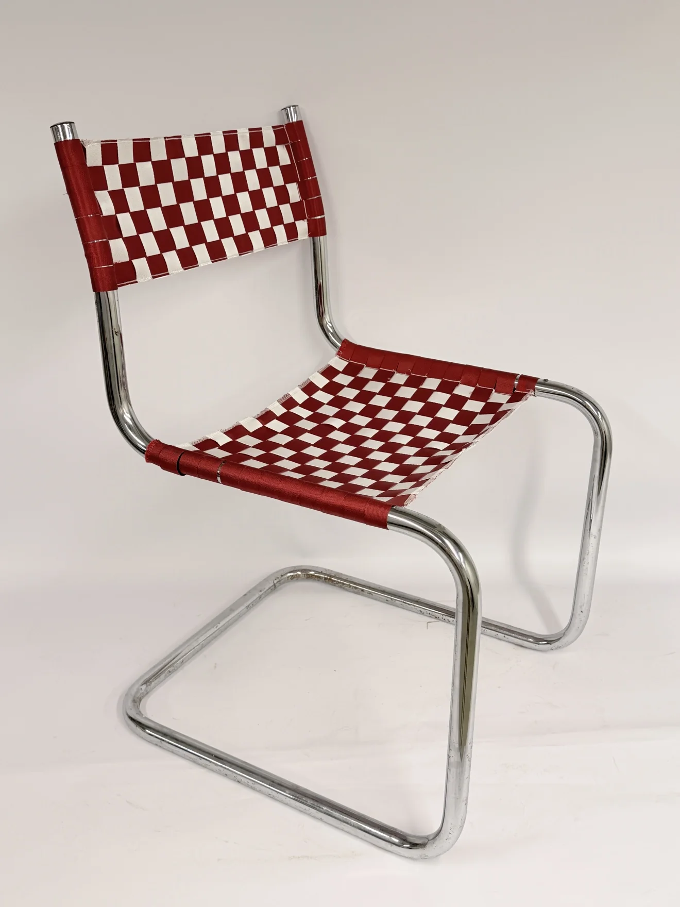
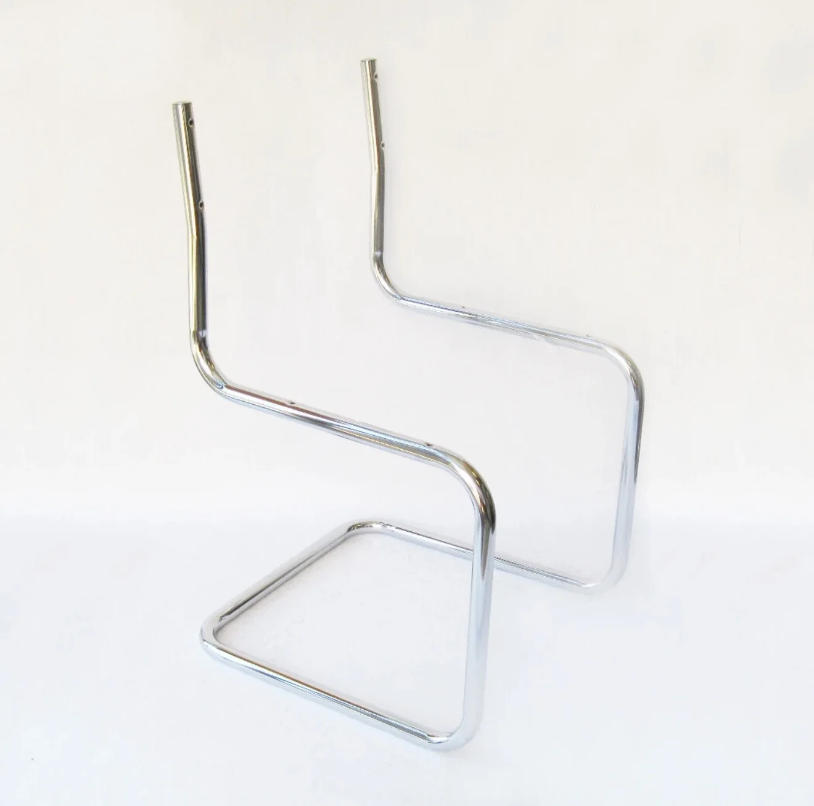
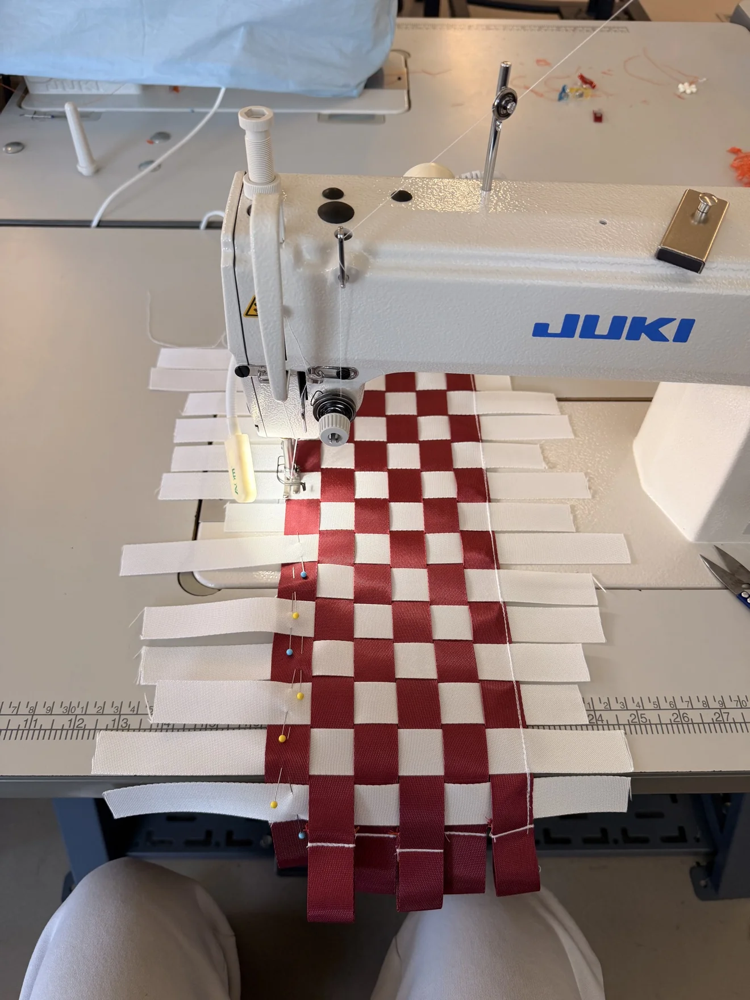
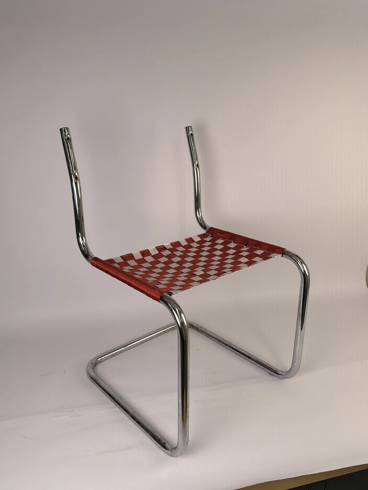
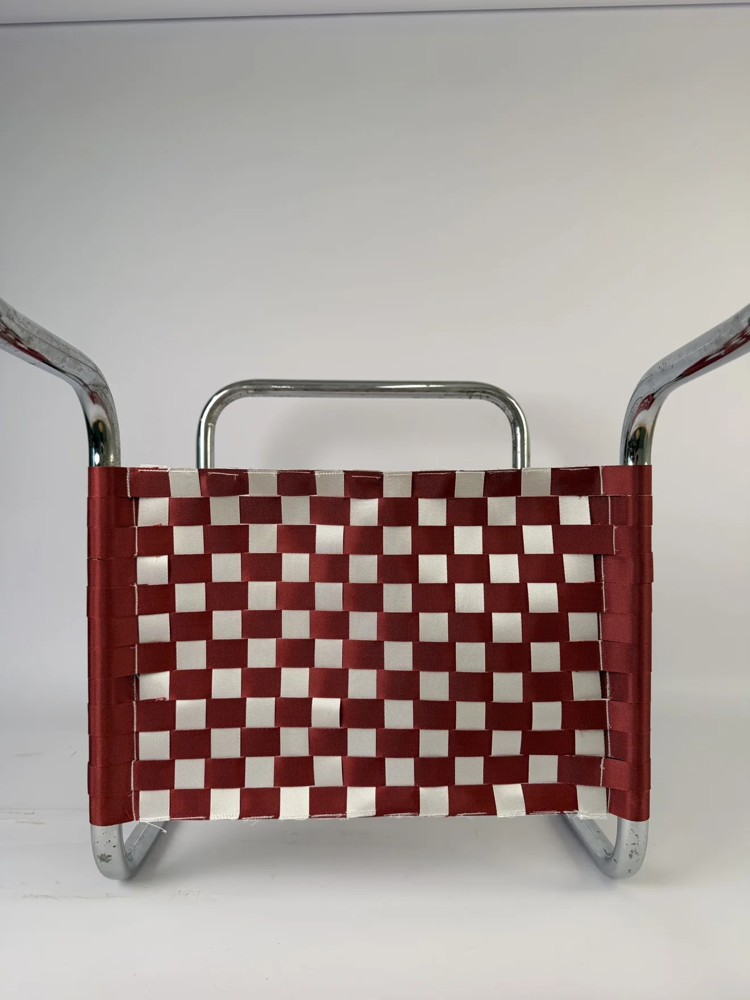
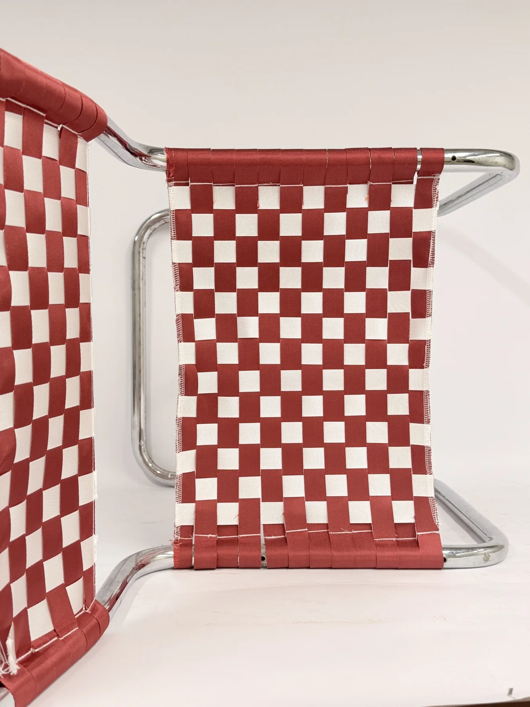

The Straight Story
An existing chrome frame. A new woven seat and back.
- Year
- Fall 2026
- Context
- Circular Design Studio · DESG 4005
- Materials
- Chrome frame · Red and white webbing
- Process
- Weaving · Machine stitching · Assembly


Keep the frame.
Rethink the surface.
A seat and back redesign for an existing Cesca frame. Red and white webbing turns two missing surfaces into the defining feature of the chair.
The project follows a material shift: from an initial proposal for webbing in wood surrounds to stitched panels fitted directly around the metal rails.
Work with
what remains.
The chrome frame provided a starting point: a continuous cantilever structure with no seat or back. The design task was to give it usable surfaces again while retaining the existing metalwork.
The initial repair proposal explored removable clamp bars and wooden surrounds. The red-and-white iteration shown here takes a more direct approach, with the webbing wrapping the frame itself.


Weave.
Stitch. Fit.
Alternating red and white straps form a basket weave. The panels are stitched on an industrial sewing machine, then fitted around the frame’s rails. The assembly photograph records the seat in place before the back is added.
Working from a flat panel to a three-dimensional frame makes the edge construction central to the design: the straps continue around the tube, bringing the textile and metal together.




A pattern that
shows its making.
The checkerboard makes the over-and-under weave visible. At the edges, rows of stitching and wrapped straps show how the new surface meets the retained frame.
The result is a chair study in reuse and textile construction. The next step is to evaluate seating comfort, webbing tension, and how the stitched connections hold up through repeated use.



